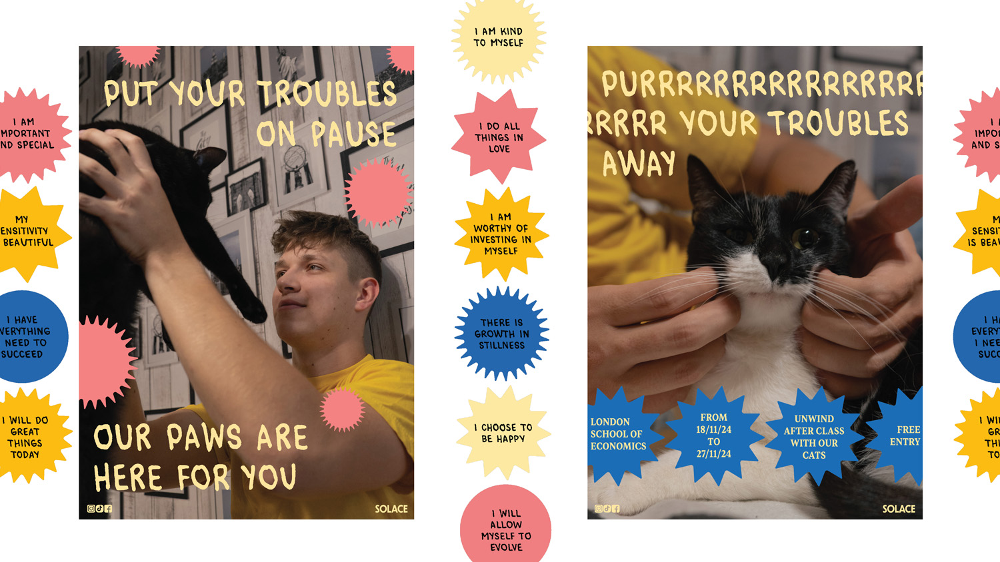
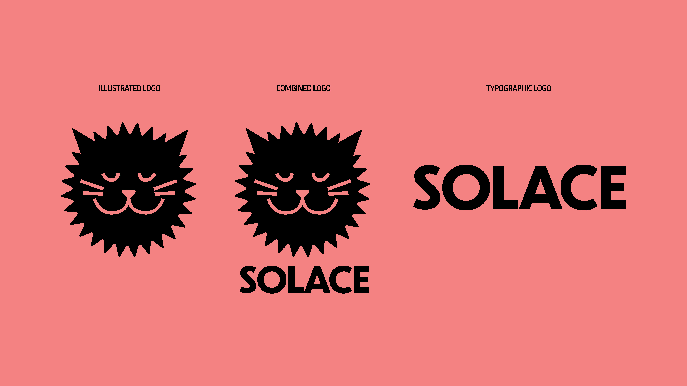
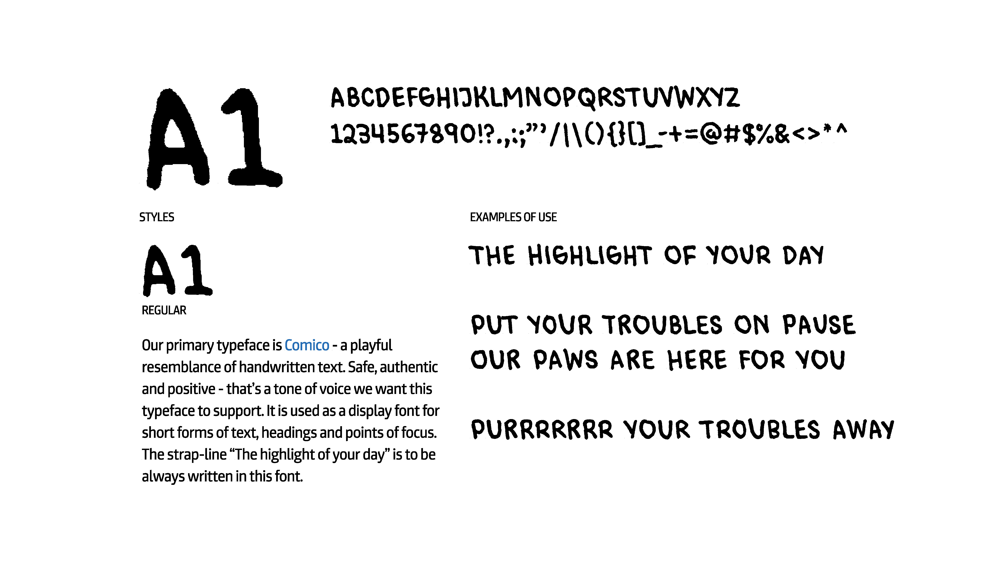
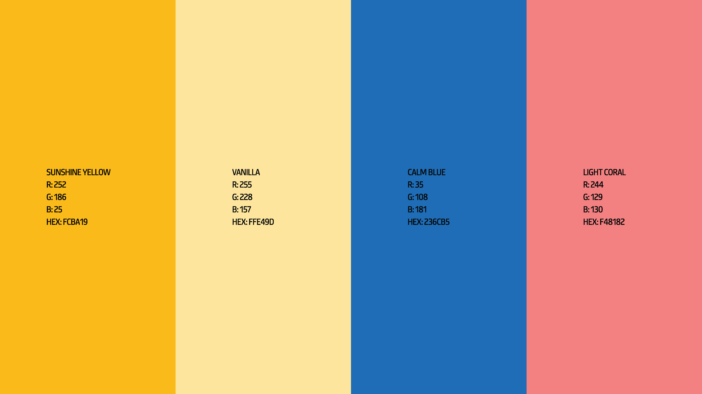
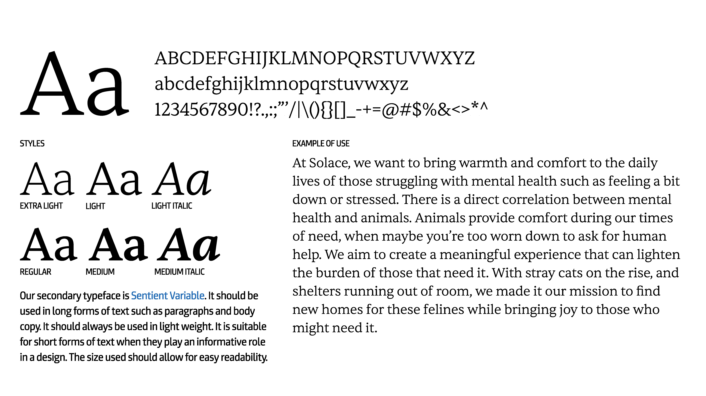
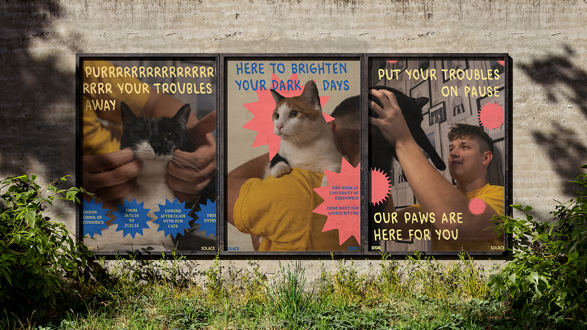

Solace
Solace is an imaginary organisation providing mental health services. They provide communities at risk of mental struggles with a safe space to unwind surrounded by cats rescued from local shelters, out of which almost all are up for adoption. Solace’s brand identity is cheerful, bright and all about their community.
CLICK HERE TO SEE FULL BRAND GUIDELINES



Solace facilities are open to anyone 18+ (16+ when accompanied by a legal adult), who are feeling particularly stressed or in need of a moment of peace in their busy day. Solace is a peaceful environment filled with natural light, soft textures, a quiet atmosphere, and of course, lots of feline friends. Alongside the flagship store, Solace’s services can be rented out by local universities. With a 1 week minimum stay, they will take over a dedicated room in your university to offer their services to students. In stressful periods such as midterms or finals, finding a bit of solace in your day can be hard. Solace understands what a difference a couple minutes of peace and comfort can do for a stressed mind.




